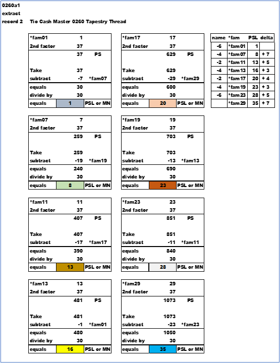
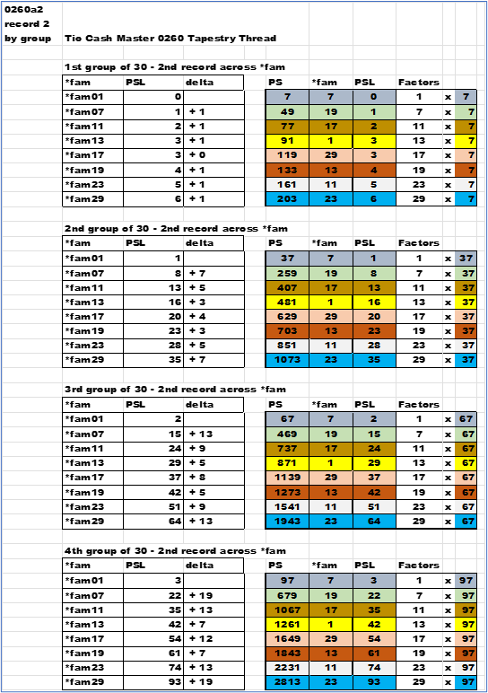
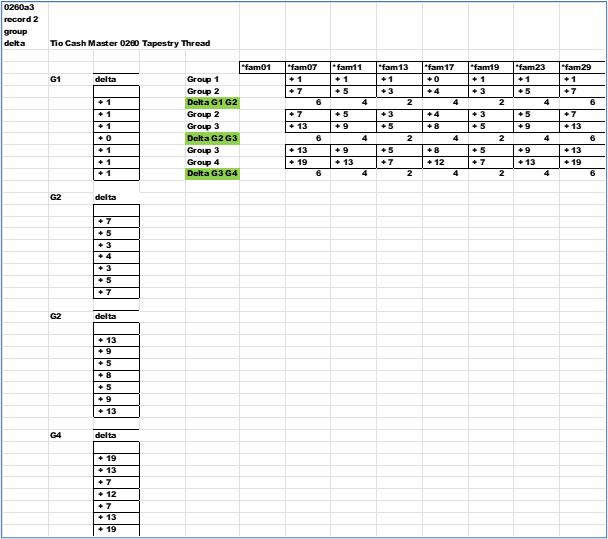
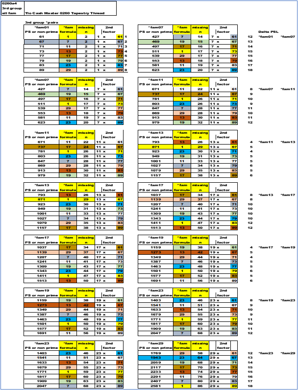
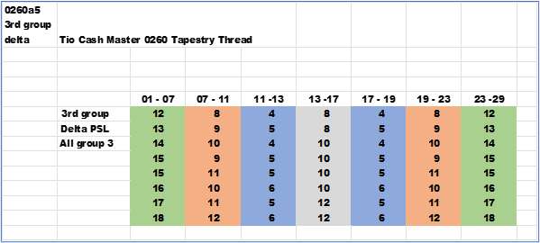

The delta between the PSL "s.
Extract record two ; sort out all others and keep the second record of each group. Here is a simple analysis of the PSL. In the below chart all the records are from the 2nd group and the second record. The second factor is thirty-seven (37).
First the PS is calculated , then the *fam is calculated and assigned and subtracted from the PS. The difference (Take & subtract & equals) is then divided by thirty and the PSL is calculated. The PSL are painted in colors.
The small chart on the right is the list of the *fam and the PSL. Next the difference between the PSL is calculated between two adjacent *fam. The point of this is to show the symmetry of the *fam solutions for both the name and value. Look at the "delta" column.
The second test is another larger crosscut of the data to show more symmetry.
Think of a three-dimensional array ( i , j , k ) and then sort out one level ( 2nd record ) across each block of thirty ; and again , across multiple *fam. The sort is an extraction of sub-records. The result will yield the PSL and the delta from the smallest *fam up to the largest *fam. A sub-set of records are sorted out to compare the difference.
Take the above results and transform the resultant array and test the results. Below the left arrays are results from above. To the right are stacked arrays and the difference between each adjacent array. It"s a constant. This is one example , but will be true for all *fam.
Next is a block compare ; all *fam values for the 3rd group are compared. The starting 2nd factor value for each *fam block is sixty-one. To the far right is the delta between each adjacent *fam. The names and the deltas. Note the symmetry between the *fam that add up to thirty. Compare the outer blocks 01 & 07 to 23 & 29. Then move in one level on the top and bottom. 07 & 11 to 19 & 23. Then 11 & 13 to 17 & 19. Finally , 13 & 17 stand alone in the middle.
The deltas are the same for each pair even though the PSL (missing n) is growing.
Finally , all the values from above right-hand side arrays are used to produce the following array. Note the symmetry left to right.
 next